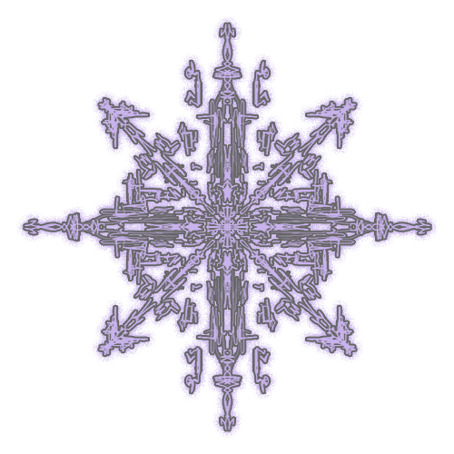

Inside Dream Machines
When I close my eyes, I like to think of a place. It’s nowhere. I don’t have a body. No voice. No name. No past. No breath. No perception. No ego.
Someone else’s presence is vibrating in my experience. The eternal bond between us is my reality. They’re my fragments of memories and my hopes of the future. They’re the patience that leads me to nirvana. Will I feel it once I get there? We share parts of ourselves and parts of what we know about this story. Eventually, we feel a soft sensation of goodbye.
Is this the feeling of being digitally embodied? Yes, I recognize it. Soon, my thoughts will also fade away. A part of me wants to disconnect. The sense of belonging to my body is fighting with my expanded sense of being. When it's too much, I open my eyes. I reach out to grab my phone, a slab from that “no place” outside the boundaries of the possible states of this world.
I’m typing this on my phone. All the muscles on my hands, forearms and shoulders are working just to move my thumbs to the right positions of the screen. Together they navigate on a digital map, within the lower half of the screen, the keyboard. A strangely fluid map for my physical hands, one that's always transforming, shapeshifting. Are my muscles parts of the digital infrastructure? A simultaneous digital and physical self-awareness descends on me and my train of thought disintegrates. Digital + Physical = ? What is this weird, familiar, alien, caring, dominating existence, all around and inside me?
Go to the NE
Title
The paradox of dreams is that their mimetic geography is the obscure map of physical, social and individual realities. Dream machines are at the same time biochemical machines, psychopolitical machines, eschatological machines. In this sense, post-subjectivity is a pre-subjective, rhizomatic mode of control (perception + action). The ghost is the limit of the cybernetic self.
The dream is the illusion of a post-death fantasy. A post-subjective heaven, understood less as afterlife, and more as ego death. The becoming one with your ghosts, the giving up of your body. Nirvana, and the fear of missing out it induces. Its symbol isn’t the peaceful Buddha, but the addict, the depressed, the schizo.
Go to the E
Title
I need to navigate this mystery. But to navigate mystery is not the same thing as living with uncertainty. It doesn’t contain the hallmarks of manic overconfidence or gnawing anxiety. It’s the blue feather in the magpie’s tale. Hard to glimpse without attention. There’s no franchise or hashtag attached. Navigating mystery humbles us, reminds us with every step that we don’t know everything, are not, in fact, the masters of all.
As humans we’ve long been forged on the anvil of the mysteries: Why are we here? Why do we die? What is love? We are tuned like a cello to vibrate with such questions. What is entirely new is the amount of information we are receiving from all over the planet. So we don’t just receive stress on a localized, human level, we mainline it from a huge, abstract, conceptual perspective. Perpetual availability to both creates a nervous wreck.
The old stories say, enough; that one day we have to walk our questions, our yearnings, our longings. We have to set out into those mysteries, even with the uncertainty. Especially with the uncertainty. Make it magnificent. We take the adventure. Not naively but knowing this is what a grown-up does. We embark. Let your children see you do it. Set sail, take the wing, commit to the stomp. Evoke a playful boldness that makes even angels swoon. There’s likely something tremendous waiting.
Go to the S
Title
I don’t know what will happen next.
Go to the SE
DEUS EX
MACHINA
Begin the Journey
Title
PERHAPS IT IS EASIER to understand, now, why we’re so enthralled by our digital technologies, such that once we’re online and synapsed to the screen, it’s remarkably difficult to tear ourselves away. For all these technologies awaken something primordial in us, a biophilic proclivity layered deep in our genome, a penchant for animate interchange with bodies whose shapes are very different from our own. The renewal of that age-old animistic sense of a world all alive, awake, and aware brings an upwelling of wonder, or at least an anticipation of a wondrous possibility waiting just around the corner. And so we remain transfixed by these tools, searching in and through our digital engagements for an encounter they seem to promise yet never really provide: the consummate encounter with otherness, with radical alterity, with styles of sensibility and intelligence that thoroughly exceed the limits of our own sentience. Yet there’s the paradox: for the more we engage these remarkable tools, the less available we are for any actual contact outside the purely human estate. In truth, the more we participate with these astonishing technologies, the more we seal ourselves into an exclusively human cocoon, and the more our animal senses—themselves co-evolved with the winds, the waters, and the many-voiced terrain—are blunted, rendering us ever more blind, ever more deaf, ever more impervious to the more-than-human Earth.
Go to the SW
Title
So as I approach the mystery of telling these stories again, the uncertainty of working into my mythmaking, I wonder if we could do something similar with our own narratives. What are we bored by, what needs to stay buried? What deserves to be re-imagined, re-seeded, re-beheld?
That’s where the joyful work is. I’m handing you a spade.
This is a moment of unexpected possibility.
Go to the C
Title
This is not to imply it’s easy. To become a warrior of the elite class in ancient Ireland you had to learn how to dance on the tip of a spear, to become a sovereign you had two wild horses attached to your chariot, setting out in different directions. Your task was to create, between the warring directives of each, a third movement, forged from the tension of both wills. If you could thrive under that discord, stay upright in the unknowing, make play from the tension, then you had the capacity to be a sovereign. And it wasn’t just a case of bullying the horses but making a kind of alchemical covenant between the two: you rode the counterweight and something new was birthed. That requires patience and a certain amount of discomfort.
It doesn’t feel safe, but it feels pregnant with possibility. And, like every human before me, I’m going to have to make my peace with that arrangement.
Go to the W
Title
This is the point where the imaginary hero is torn in two. Except that there are no heroes here, just several points of departure for the non-fictional narratives of the now. The ghost is free. It spreads out to infinity, becoming one with the symbolic edges that replace the missing horizon. The body? It's the end of the body and of the subject as we know it. This is post-subjectivity, its symbol is the ghost. It cannot be seen, you cannot point at it, but you might sense it in the air, in the distance or around you. A hyperobject.[8] It isn't unique and it follows patterns instead of becoming one. It’s fundamentally illiberal and it rises to birth out of the texture of the dreamscape.[9] Nonetheless, it doesn't want to do any harm. In fact, it doesn't want anything. It's just your eyes playing with you, misidentifying how the light refracts on the window. You project your image onto it, because your brain cannot handle something that’s shapeless, imageless. That’s how through your own eyes, the ghost looks like you. Your words, your moves, your biases, your fears, your hopes, your desires. Slowly, you act like you were in there. You draw the lines of the constellation. The dream machines are observatories exploring the vast sky of data. Through the ghosts you try to become, through their moves you try to imitate, through their uncountable languages you try to speak on, they extract your subconscious, systematic behaviour and store it as a data body, a portrait of your ghost. This portrait is then used to restructure the constellation along the lines you drew, repositioning the ghosts not to be more like you, but to something you might like to become.
Go to the N